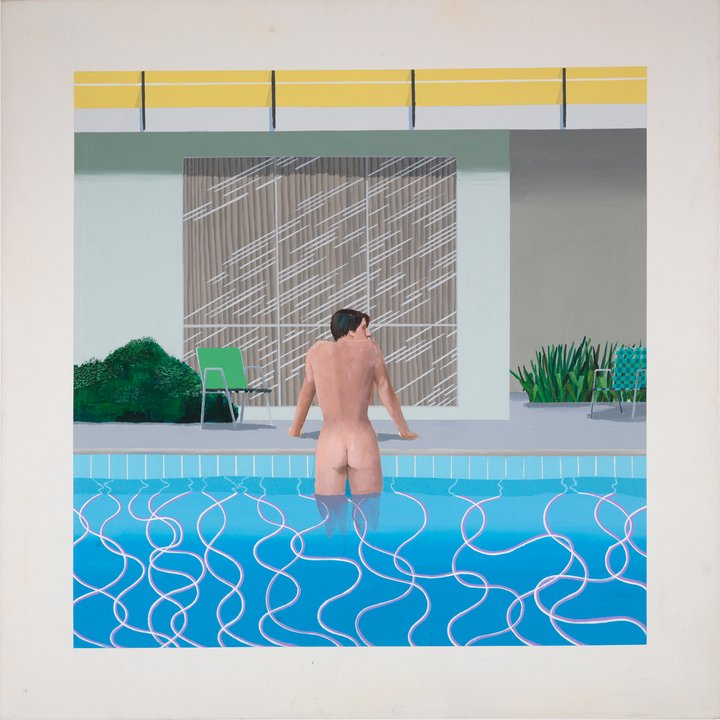

he approaches his 80th birthday, Hockney continues to change his style and ways of working, embracing new technologies as he goes. From his portraits and images of Los Angeles swimming pools, through to his drawings and photography, Yorkshire landscapes and most recent paintings – some of which have never been seen before in public – this exhibition shows how the roots of each new direction lay in the work that came before. A once-in-a-lifetime chance to see these unforgettable works together.
Books by Hockney
72 Drawings (1971), Jonathan Cape, London
David Hockney (1976), Thames & Hudson, London
Blue Guitar: Etchings by David Hockney Who Was Inspired by Wallace Stevens Who Was Inspired by Pablo Picasso (1977), Petersburg Press, New York
Travels with Pen, Pencil and Ink (1978), Petersburg Press, New York
Pictures by David Hockney (ed. Nikos Stangos) (1979), Thames & Hudson, London

Getting Out of Nick's Pool is a 1966 acrylic-on-canvas painting by the British pop art artist David Hockney.